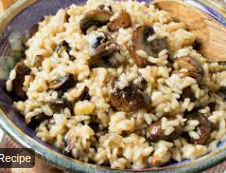

Mushroom Risotto

Description
Don't let the simplicity of this recipe fool you into thinking that this dish is anything but amazing.
Present this to friends and family & you'll definitely be dubbed the Fun-Guy of the kitchen.
Ingredients
- 4 tablespoons extra virgin olive oil
- 1 stick celery, finely chopped
- 1 small onion, finely chopped
- 375 gr arborio rice
- 175 ml dry white wine
- 200 gr mixed mushrooms (Put 20 grams of mushrooms into 200ml of hot water to make a mushroom broth)
- 500ml chicken stock(kept hot on stove top)
- 50 gr parmesan cheese
- 35 gr butter
- Salt & pepper to taste
Method
- Heat the extra virgin olive oil in a medium heavy-based saucepan. Add the onion and celery and sweat until softened.
- Stir in the rice with a wooden spoon and coat each grain with the oil.
- Add the wine and allow to evaporate.
- Stir in the mushrooms, adding a couple of tablspoons of the mushroom broth
- Add a couple of ladles of hot stock and,
stirring continuously, cook until the stock is absorbed. Add more stock and repeat. Continue adding stock in this way and stirring, for about 20 minutes until the rice is cooked.
- Bring to a boil then turn down to a simmer with the lid on for 15 to 20 minutes
- Turn the heat off and put in 10 gr of the butter
& the rest of the parmesan. Put the lid back on and leave for
3 minutes.
- Stir & serve
- Enjoy!